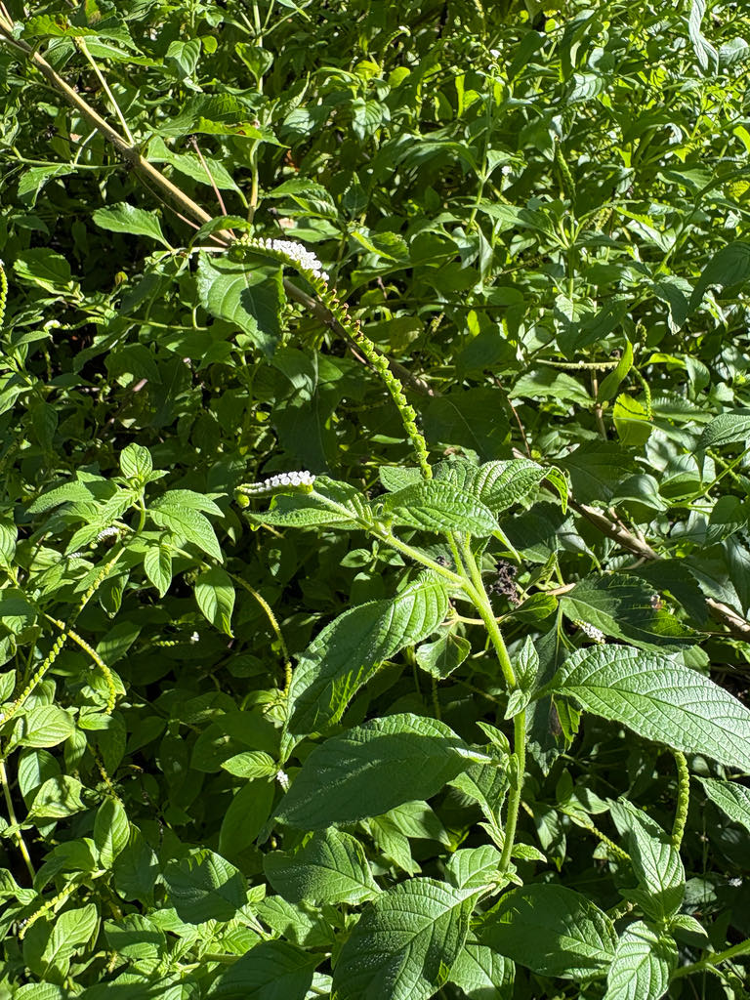

- The flower spike coils like a scorpion's tail and slowly uncurls as each tiny white bloom opens in turn, from base to tip.
- It's a Florida native and a year-round butterfly magnet — its nectar feeds the Miami blue, Schaus' swallowtail, gulf fritillary, queen, and a long list of others.
- It's one of several UF/IFAS-recommended natives Palma Sola is planting along its pond shores for erosion control — look for it around most of the park's pond banks.
- The genus name Heliotropium means 'sun-turning,' from the old belief that the flowers follow the sun across the sky.
Native to Florida's coastal counties — from Pinellas and Volusia south through the Keys — and on through Texas, Mexico, the West Indies, and Central and South America. Grows naturally in coastal hammocks, strands, and open disturbed ground near the coast.
- The Scorpion Tail's coiled flowering spike is a small marvel of plant engineering. Botanists call it a scorpioid cyme (or cincinnus): the flower axis curls over on itself, and the blossoms open in sequence from the base of the coil toward the tip, so the spike appears to slowly unfurl over days.
- The common name captures it exactly, and the genus name reaches even further back — Heliotropium comes from the Greek helios ('sun') and trepein ('to turn'), from the old belief that these plants turn their flowers to follow the sun.
- At Palma Sola, this modest native has become a workhorse of restoration. The park is deploying it aggressively along its pond shorelines under two complementary grants — from the Tampa Bay Estuary Program and the Sarasota Bay Estuary Program — to restore and stabilize pond edges.
- UF/IFAS consultants selected it as one of several species that perform well for shoreline stabilization in brackish water, where many ornamentals fail. A plant most people walk past as a roadside weed is, in this setting, doing real ecological work holding the park's shorelines together — and feeding an exceptional range of butterflies while it does (see Wildlife Value).
- A note of caution balances the charm: like many in its family, Scorpion Tail contains pyrrolizidine alkaloids, compounds that can harm the liver if the plant is eaten in quantity. It has a history of folk-medicinal use in the Caribbean, but it is not a plant to eat or self-medicate with.
Scorpion Tail is a premier Florida butterfly plant. Blooming nearly year-round, its white flowers are a steady nectar source for an unusually long roster of butterflies — including two of South Florida's rarest, the federally endangered Miami blue and Schaus' swallowtail, alongside gulf fritillaries, queens, great southern whites, gray hairstreaks, cassius blues, and ruddy daggerwings.
Native bees work the flowers, and birds eat the small seeds. Its fast-spreading, soil-binding roots stabilize pond and shoreline edges, while the low branching cover shelters insects, lizards, and small wildlife at the water's margin — habitat value layered on top of its pollinator value.
Fast-growing and a prolific self-seeder; short-lived (often about 3 years) but readily replaces itself. Propagated by seed or cuttings — useful for the volume planting the park's restoration work requires.
Tiny white flowers with pale yellow throats, borne in two rows along one side of a curved, coiling terminal spike (the 'scorpion tail'), which uncurls as blooms open from base to tip. Blooms year-round. Draws butterflies and native bees.
Small dry fruit splitting into seed-bearing nutlets; seeds favored by birds.
Lanceolate to elliptic, alternate, stalked, with deeply veined surfaces and softly hairy undersides.
Branched, herbaceous to slightly woody, sprawling to upright.
Look for the distinctive coiled flower spike — the namesake scorpion's tail — slowly unfurling as the little white flowers open along it. Watch the blooms for butterfly traffic; this is one of the park's busiest nectar stops. Around most of the park's pond banks, notice it planted in quantity alongside other native shoreline species, knitting the water's edge together.
Don't eat this plant or use it medicinally — it contains pyrrolizidine alkaloids that can harm the liver if consumed in quantity, despite some folk-medicine use.
It's not dangerous to brush against or handle. For dogs, the alkaloids are liver-toxic only if eaten in quantity, so casual contact isn't a concern — just discourage chewing.


- © Randall Carter (CC-BY-NC), via iNaturalist
- © Franky McArthur (CC-BY-NC), via iNaturalist